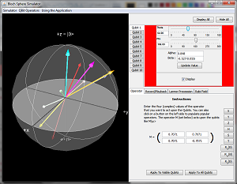

Bloch Sphere Simulation
Stephen Shary and Dr. Marc Cahay
Created at the University of Cincinnati

Summary
This simulator is designed to be an easy to run tool that allows users to view the state of a qubit through the Bloch Sphere. The simulator provides documentation on the actions of the simple operators and also provides some time evolution simulation through magnetic fields. The simulator can record and playback multiple operations and provide the ability to view the effect of a series of operators.
Simulator Background
The simulator was originally created to show a visual representation of qubits on the Bloch Sphere. It was started by Nick Vatamaniuc. Later modifications where made by Stephen Shary to provide documentation, improve the UI, and provide controls that allow for dynamic manipulation of the qubit states.
Requirements
The application requires the Sun (now Oracle) JVM version 1.5 (or higher). For more information, please visit here to download the latest version
NOTE: We have tested the simulator with openJDK (6 and 7) and found layout problems with the UI. The functionality seems to work, the buttons are all over the place though!
Running the Simulator using webstart
Click on the "launch" button to start the simulator.
Running the Simulator Locally
Download bloch3dapp.zip. Unzip the file to a local directory. Run the correct batch or shell script to start the simulator. If you are unsure, try any of them! You must have Java on the local path. You can test this by opening a bash prompt or command prompt. If you get an error, then you will need to update your local path.
blochapp.zip: The zip file containing the required jar and launch script(s). NOTE: The java3D jars are included as part of the deployment.
You can also save the webstart application locally. Most operating systems (Windows, Mac OSX, Linux (with UI) will let you double click the jnlp file to launch it locally. Right click on the "bloch3d.jnlp" and save the file locally to run it locally.
bloch3d.jnlp: Right click on this link and save the file locally to launch it offline.
Questions, comments?
Let us know what you think! You can email questions or comments to or